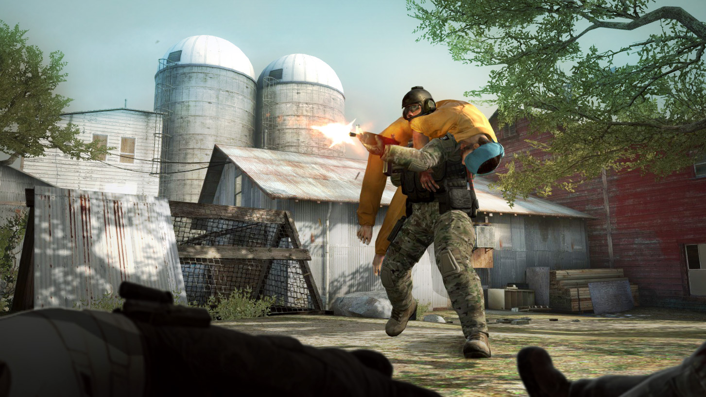

Gamemodes
Ranked In ranked gamemodes speel je om een betere rank te behalen. Als je in ranked veel wint dan ga je omhoog en als je verliest omlaag. Dit zijn hierdoor de serieuze gamemodes, want iedereen wil een zo hoog mogelijke rank behalen. Als je het spel verlaat of je team je wegstuurt in een van deze gamemodes kan je een straf krijgen waardoor je die gamemode een tijdje niet meer kan spelen, meestal eerst een paar uur maar als je dit veel doet kunnen dat al snel een paar dagen zijn. Competitive Dit is de gamemode die je ziet bij e-sports (proffesionele toernooien voor prijzengeld). En de mode die het spel zo populair maakt. Je bent deel van een team van 5 mensen die tegen een ander team van 5 mensen moet. Je speelt als terrorist of een agent. Je wint het spel als je 16 potjes hebt gewonnen voordat het andere team 16 potjes heeft gewonnen. Om 1 potje te winnen moet je het vijandelijke team uitschakelen of het speldoel bereiken. Op basis van of je het goed of slecht hebt gedaan in een potje verdien je geld, dat in het volgende potje kan worden gebruikt om uitrusting, granaten of vuurwapens te kopen. Die kan je ook van dode teamspelers of vijanden pakken terwijl het potje nog bezig is. Op basis van de map (de plek waar het potje plaatsvind) die je speelt zijn er hier 2 speldoelen: Defuse Bij defuse moeten de terroristen een bom planten op 1 van de 2 aangegeven locaties op de map. De agenten moeten dit voorkomen of de bom nadat hij is geplant onschadelijk maken. Als de bom ontploft of alle agenten dood zijn winnen de terroristen. Als de bom ontschadelijk gemaakt wordt of er wordt voorkomen dat de bom geplant word, bijvoorbeeld door alle terroristen te vermoorden dan winnen de agenten. Hostage Bij hostage moeten de agenten gijzelaars aan de ene kant van de map oppakken en naar en veilige locatie brengen. Als dat lukt winnen de agenten. Als dat niet lukt winnen de terroristen.  Wingman Wingman is een ranked gamemode die je minder vaak ziet. In deze gamemode speel je defuse maar met 2 teams van 2 mensen. Wel is de map kleiner, is er maar 1 punt om de bom te plaatsen, duren de potjes korter en heb je minder potjes nodig om te winnen. Danger zone In danger zone speel je op een hele grote map en moet je met je team als laatste overblijven. Wapens en uitrusting kun je vinden in kisten, van andere spelers en kopen via de tablet in het spel met het geld dat je oppakt. Dit is de nieuwste gamemode van het spel. Niet-ranked Als je niet-ranked speelt dan heeft de uitkomst van het spel verder geen gevolgen, het is meer voor de lol en je kan er niet hoger of lager dan andere mensen mee komen. Arms race In arms race speel je in 2 teams maar de score is individueel (er kan maar 1 iemand winnen). Het doel van deze gamemode is om zo snel mogelijk iemand te vermoorden met het gouden mes. Als je met een wapen een paar keer iemand vermoord, dan ga je door naar het volgende wapen. Zo kom je uiteindelijk bij het gouden mes aan. Als je dood gaat respawn je gewoon weer. flying scoutsman In deze gamemode krijg je alleen de ssg 08 (de scout) en een mes. Ook kan je heel hoog springen en is de zwaartekracht minder sterk. Je speelt in 2 teams en je wint potjes door het vijandelijke team uit te schakelen. Als je genoeg potjes wint win je het spel. Demolition Hier speel je als 2 teams van 5 mensen en speel je defuse op een kleine map. Verder is er nog een twist, namelijk je mag je wapen niet kiezen en elke keer als je iemand vermoord krijg je in het volgende potje een nieuw wapen. Casual Hetzelfde als competitive, maar elk team bestaat uit 10 spelers. Scrimmage Precies hetzelfde als competitive, maar het telt niet mee voor je rank. Deathmatch Hierin speel je in twee teams maar je speelt voor jezelf. Je mag elk wapen kiezen waarmee je wilt spelen en het doel is om binnen de tijd van het potje zoveel mogelijk mensen uit te schakele. Als je dood gaat respawn je gelijk weer.